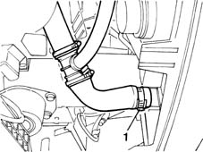
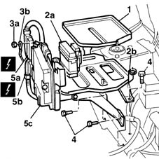
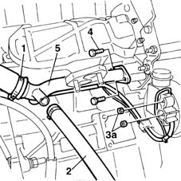

1088D24 rigid pipe for coolant inlet to water pump - r + r
- Path
- Procedures > 10 ENGINE UNIT > 1088 ENGINE COOLING > 1088D COOLANT HOSES AND SLEEVES > 1088D24 rigid pipe for coolant inlet to water pump - r + r
- Kind
- repair procedure (removal / refitting; the operation number is the code)
- Applies to
- engines: 1.6 16v; all production periods
- Interactive page
- https://sloeber94.github.io/elrnDB-fMltpl/en/#/2891335
Applies to: engines: 1.6 16v; all production periods
 Removing
Removing
 Refitting
RefittingOpen the bonnet lid.
With the ignition key in the OFF position, disconnect the battery negative terminal.
1. Place a container under the vehicle to collect the engine coolant, then disconnect the lower hose from the radiator.

Applies to: engines: 1.6 16v; all production periods
1048A10 AIR CLEANER FILTERING ELEMENT - REPLACE
1. Remove the collection tray from the battery cradle.
2. Release press-fitted fuse boxes (2a), then open engine wiring collar (2b)
3. Undo nut (3a) and release earth lead (3b) from the control unit mount.
4. Undo the bolts securing the battery cradle to the body.
5. Disconnect injection control unit electrical connections (5a) and (5b). Then remove battery/injection control unit assembly (5c).
 | Name | Connector |
|---|---|---|
5a | Engine management ECU |
| Name | Connector |
|---|---|---|
5b | Engine management ECU |

Applies to: engines: 1.6 16v; all production periods
1. Disconnect the hose carrying coolant to the pump from the thermostat.
2. Disconnect the pipe carrying coolant to the heater.
3. Disconnect the supply leads from the alternator.
4. Undo the rigid pipe bolts.
5. Remove the rigid pipe, withdrawing the alternator leads.

Applies to: engines: 1.6 16v; all production periods
Refitting
RemovingChange the gasket between the rigid pipe and the coolant pump.
Fit the rigid pipe and position the altenator leads correctly.
Tighten the bolts securing the rigid pipe to the coolant pump to torque.
 | Fastening | Component | Ø | Value (daNm) |
|---|---|---|---|---|
- | Bolt | COOLANT PUMP RIGID INLET PIPE | M8 | 2.5 |
Connect the supply leads to the alternator.
Connect the pipe carrying coolant to the pump to the thermostat.
Connect the pipe carrying coolant to the heater.
Fit the battery cradle/injection control unit assembly.
Connect the injection control unit connections.
Tighten the bolts securing the battery cradle to the body to torque.
| Fastening | Component | Ø | Value (daNm) |
|---|---|---|---|---|
- | Bolt | BATTERY SUPPORT/CAGE | M8 | 3 |
Fit the earth lead to the control unit mount and do up the nut.
Secure the fuse boxes to the brackets and do up the collars to secure the engine wiring.
Fit the collection tray to its housing in the cradle.
1048A10 AIR CLEANER FILTERING ELEMENT - REPLACE
Connect the lower cooant hose.
Top up the coolant level by carrying out op. 1088A10 Engine COOLANT - Check density' and top up level, if necessary
Connect the battery negative terminal.
Close the bonnet lid.